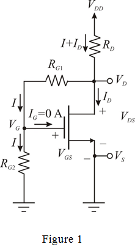

Step 1:
Refer to Figure P5.109 in the textbook.
Neglect the gate current, and draw the circuit with current and voltage notations.

Step 2:
Write the expression for the drain current.
Here,  is the gate-source voltage,
is the gate-source voltage,  is the threshold voltage, and
is the threshold voltage, and  is the Trans-conductance parameter multiplied with width to length ratio.
is the Trans-conductance parameter multiplied with width to length ratio.
Substitute 2 mA for  , for
, for  , and 1 V for
, and 1 V for  to find the value of
to find the value of  .
.
Therefore, the gate-to-source voltage,  is 1.8 V.
is 1.8 V.
The source terminal in the circuit is grounded, so the source voltage, .
The gate voltage is,
Step 3:
Calculate the drain-source voltage,  .
.
Find the value of  , such that the transistor operates in saturation with 2 V negative signal swing at the drain.
, such that the transistor operates in saturation with 2 V negative signal swing at the drain.
Calculate the drain voltage.
Step 4:
Consider that the resistance, .
Use Ohm’s law to calculate the current through .
.
Use Ohm’s law to find the unknown resistance,  .
.
Therefore, the values of the unknown resistances, are respectively and .
Calculate the unknown resistance,  .
.
Therefore, the value of unknown resistance,  is, .
is, .